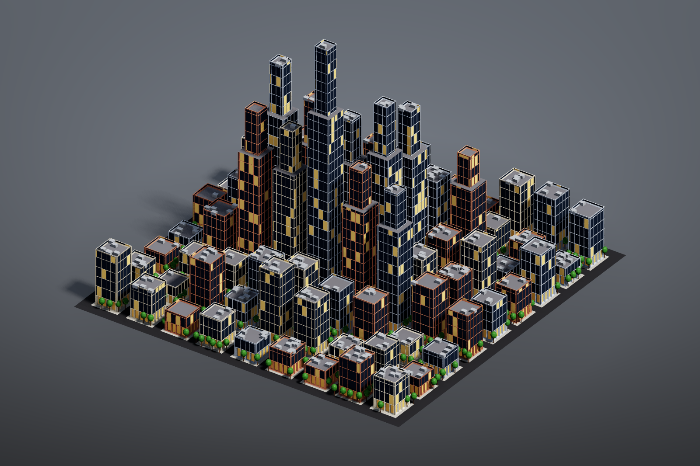

City block#
A whole city block built only from face operations and groups, without a single hand-placed point: 81 lots with streets and sidewalks, buildings extruded by a per-lot height, setback towers on the tall ones, window grids, shopfronts, parapets, rooftop units, street trees and per-building colours.

Load it#
Drag example_workflows/pcg_sop_city_block.json onto the ComfyUI canvas and press Queue. Only comfyui_pcg nodes plus ComfyUI's Preview Image are used.
Step by step#
1. Lots (first column)
- Grid (PCG) (108 x 108 m, 10 x 10 points = 9 x 9 cells of 12 m) is the street grid.
- PolyExtrude (PCG) with distance 0 and inset 1.4 only insets each cell, which leaves room for the streets. Blast (PCG) keeps the inset faces (group
extrudeFront): 81 lots. - A Wrangle (PCG) running over primitives computes per lot
height(taller towards the centre, randomised withrand(@primnum + ...); in primitive context@Pis the face centre),crown(0.35 x height) and the integerlotid. - Another PolyExtrude (PCG) (inset 0.9, distance 0) splits each lot into a
footprintand a ring ofsidewalk.
2. Buildings (second column)
- PolyExtrude (PCG) extrudes the group
footprintby the primitive attributeheight(Local Attributes on, Distance Scaleheight), writing the groupsroofandwalls. - Group Create (PCG) with base
@height > 28creates the grouptall; Group Combine (PCG) intersects it with the roofs (tall & roof->setback). - Those roofs are first inset (setback terrace), then extruded again by
crowninto towers. Two more Group Combine nodes collect all walls (walls | walls2) and all roofs ((roof - setback) | roof2).
3. Facades (third column)
- Divide (PCG) with Bricker Polygons cuts the walls into 1.6 m x 3.2 m window cells; floor lines line up automatically.
- Group Create (PCG) selects the ground floor by bounding box (y below 3.3) as
ground; Group Combine givesupper= walls minus ground. - PolyExtrude (PCG) recesses the ground-floor cells into shopfronts (inset 0.25, distance -0.5). A second one insets every upper cell and pushes it in (inset 0.45, distance -0.25) to make window frames and glass. Limit Insetting is on for both: the top row of cells can be only a few centimetres tall, and without the limit the inset would push points outside the cell (frames poking through the roof).
- A third PolyExtrude insets and sinks the roofs (inset 0.35, distance -0.8) to create parapets.
4. Colour and details (fourth and fifth columns)
- Wrangles over primitives pick one of three palettes per building by
lot, light about 12% of the windows (rand(...) > 0.88on the groupglass), and colour shops, roofs, terraces and sidewalks; Color (PCG) nodes add the warm shop light and the sidewalk colour. - Rooftop units: a Box (PCG) whose base is moved to y = 0 by Match Size (PCG), copied by Copy to Points (PCG) onto 90 points from Scatter (PCG) on the group
roofin, then coloured metal grey. - Street trees: a trunk (Tube (PCG)) and crown (Sphere (PCG) moved up with Transform (PCG)) are merged into one tree, then copied onto 150 points scattered on
sidewalk(with relaxation so they are spaced out) and scaled by a randompscalefrom Attribute Randomize (PCG). - A road plane, then Merge (PCG) of everything, Viewport (PCG), Geometry Preview (PCG) (1600 x 1066, Studio look) and Export Mesh (PCG) (
pcg/city_block).
All colours are written on primitives (the Color nodes also use the class prim). That way every part being merged has Cd on the same class, instead of half point colour and half primitive colour.
Worth tweaking#
| Node | Parameter | Effect |
|---|---|---|
| Grid | size_x, size_z, cols, rows | Number and size of lots. |
| Lot Wrangle | code | The height formula: how tall, how much taller in the centre. |
Group Create (tall) | base | Which buildings get setback towers (@height > 28). |
| Divide | brick_size_x, brick_size_y | Window cell width and storey height. |
| Window PolyExtrude | inset, distance | Frame width and window depth. |
| Glass Wrangle | code | The share of lit windows (> 0.8). |
| Scatter (roofs / sidewalks) | count, rand_seed | Number of rooftop units and trees. |
See also#
- Groups: group names,
@attributepatterns and group combine expressions. - Tutorial 3: attributes and wrangle: extruding by a primitive attribute.
- Modular city: buildings assembled from a kit instead of modelled in place.
- Example index.